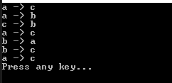

[Project design] プログラム制作(コーディング) - 関数作成方法
こんにちは。明月です。
この投稿はプログラム制作(コーディング) - 関数作成方法に関する説明です。
実務のプログラムコーディングは工程に話すと普通は生産や作成という表現を使います。ただ、それは言葉の表現で、実際は我々が知っているプログラムコーディング(実装)になります。
実務あるいは工程を設定してプログラムを作成してもプログラムコーディングする方法は普通に開発することと大幅で変わることではありません。前に設計図が作成して置いたらそのままに作成することだけです。
ここでは各のスタイルがあるし、作成方法があるので別に規約を決める必要はありませんが、自分の経験に関して工程の中でプログラムを作成方法を説明しようと思います。
一般的にウォーターフォール工程でプロジェクトを運用したら基本設計と詳細設計の段階でもうプログラム作成に関する設計が作成されたのでそのままに作成すると良いです。別に追加する内容はありません。
私が説明しようと思うのは今まで説明したアジャイル工程と混ぜている工程(設計はアジャイル、テストはウォーターフォール工程)で私のスタイル作成方法があります。
まず、アジャイル工程でプログラム設計書を作成する場合もありますが、普通はJiraやRedmineなどのツールを利用してスクラムサイクルを設定してアイテム(Ticket)別で作成します。
そのため、詳細設計の段階で抽象クラス、インターフェースを作成します。そのように思ってもプログラムを作成する時になると、予想できなかった共通部品と抽象化が必要なクラスや関数がありますね。
その場合に我々が共通部品を作成する方法に関して説明します。
この共通部品を作成する時、私はフィボナッチ数列のアルゴリズムを考えています。普通はフィボナッチ数列アルゴリズムは再帰関数で作成します。
using System;
// 実行クラス
class Program
{
// フィボナッチ数列の値を計算
private static int Fibonachi(int index)
{
// 0以下はエラー
if(index <= 0)
{
// エラー
throw new IndexOutOfRangeException();
}
// 1番目と2番目は値が1だ。
if(index == 1 || index == 2)
{
return 1;
}
// f(x-2) + f(x-1)
return Fibonachi(index - 2) + Fibonachi(index - 1);
}
// 実行関数
static void Main(string[] args)
{
// 1から10までフィボナッチ数列表現
for(int i = 1; i < 10; i++)
{
// 関数を呼び出してコンソール出力
Console.Write(Fibonachi(i) + " ");
}
// 改行
Console.WriteLine();
// 任意のキーを押してください
Console.WriteLine("Press any key...");
Console.ReadKey();
}
}
実は再帰関数を使うのはプログラムの性能上で悪いです。for文で作成することができるものを再帰関数を作成する必要はありません。
でも、関数を理解するために再帰関数みたいに良い例がありません。
我々が関数を作成することを私の新人の時によくミスした部分ですが、ソースが長いので可読性を上がるために、見やすくために作成したときがあります。
つまり、ソースを上から下まで読み込む部分で一つの関数ですべてのソースを作成することが悪いと思い、関数でソースを分割する役割だと思う時があります。
そのことで関数を考えたら、上のフィボナッチ数列の再帰関数は理解しにくいです。
Fibonachi関数で10の値を渡したら、Fibonachi(9) + Fibonachi(8)を計算して Fibonachi(8) + Fibonachi(7) + Fibonachi(7) + Fibonachi(6)の計算になり、その流れで計算することになると頭が複雑になります。
我々が中学、高校時代に数学時間に学んだ関数方程式があります。f(x)=2x + 1みたいです。
その時、我々がf(1)+f(2)=3+5=8ということを分かっています。このように関数の順番を思わず、パラメータのinputとoutputの結果だけ考えることです。
つまり、Fibonachi(1)とFibonachi(2)は1です。Fibonachi(3)はFibonachi(2)+Fibonachi(1)になり1+1の2になります。Fibonachi(4)はFibonachi(3)+Fibonachi(2)は3の値になり、Fibonachi(5)はFibonachi(4)+Fibonachi(3)は5になります。
そのように思ったら再帰関数は目に入って理解しやすいです。
それならフィボナッチ数列の例は簡単なので、少し複雑なハノイアルゴリズムで例を作成しましょう。
using System;
// 実行クラス
class Program
{
// ハノイアルゴリズム、パラメータは個数、始め、バッファー、到着
static void Hanoi(int disks, string from, string by, string to)
{
// 0以下はエラー
if (disks < 1)
{
// エラー
throw new IndexOutOfRangeException();
}
// 最後の一つは移動だけで終了
if (disks == 1)
{
// コンソール出力
Console.WriteLine("{0} -> {1}", from, to);
return;
}
// 一つを取り除いてfromからバッファーに移動する。
Hanoi(disks - 1, from, to, by);
// コンソール出力
Console.WriteLine("{0} -> {1}", from, to);
// バッファーにあることをtoに移動
Hanoi(disks - 1, by, from, to);
}
// 実行関数
static void Main(string[] args)
{
// 3個の円盤をaからcに移動、bはバッファー
Hanoi(3, "a", "b", "c");
// 任意のキーを押してください
Console.WriteLine("Press any key...");
Console.ReadKey();
}
}

ハノイも再帰関数で表現しますがただデバッグ順番でコンソール出力を考えると計算が難しいです。コンソール出力する前に関数を再帰に呼び出しするし、コンソール出力後も再帰に呼び出しします。
でも、我々はinputとoutputだけ考えましょう。
単純に Hanoi(1)はa->cに移動します。
Hanoi(2)は先にHanoi(1)ですが、a->bです。そして大きい円盤をa->cに移動します。最後にb->cに移動します。
言い直して、一番大きい円盤がa->cに移動します。一番大きい円盤の上にあるものを一応バッファーに移動(a->b)するし、大きい円盤移動したらバッファーから大きい円盤に移動(b->c)します。
Hanoi(3)はHanoi(2)がbに移動します。つまり、Hanoi(2)が実行します。aからｂ、バッファーはcですね。その後でHanoi(2)が終わると、一番大きい円盤がaからcに移動します。
次は、Hnnoi(2)がbからcに移動します。つまり、bからｃ、バッファーはaになります。
そのように関数を思えばすごく簡単になります。
つまり、我々がコーディングする時に、単純に関数の中でコードが長くなることを考えて分割することではなく、上みたいに関数化することを考えて共通関数に作ることです。
using System;
// 実行クラス
class Program
{
// 抽出関数
static string Extraction(string data)
{
return "";
}
// 取得関数
static int GetDataBaseResult()
{
return 0;
}
// 値を再設定
static string ResetData(string data)
{
return "";
}
// データベースに入力関数
static bool InsertDatabase(string data)
{
return true;
}
// 実行関数
static void Main(string[] args)
{
// 値を抽出
var data = Extraction("");
// データベースからデータを取得する。
int db = GetDataBaseResult();
// 値を再設定
data = ResetData(data + db);
// データベースに入力
if (InsertDatabase(data))
{
// コンソール出力
Console.WriteLine("OK");
}
// 任意のキーを押してください
Console.WriteLine("Press any key...");
Console.ReadKey();
}
}
実務でよく作成するFacadeパターンで作成してみました。Main関数ですべてのロジックを入れることではなく、行為別で関数を結んでMain関数には設計図みたいに実行行為と結果だけ確認します。
つまり、Extraction関数には関数の内容に関して考えせずに、Extraction(値)ならoutputで何の値がリターンするかを考えてプログラムを作成することです。
単純に一部だけですが、そのことに全体をみればMain関数は設計図みたいにどのように作動するかをソースだけで設計がみえます。つまり、設計図が無しで、プログラムのソースだけで設計図みたいに作成することができます。
また、関数の再使用性もすごくよくなるし、詳細設計がなくてもプログラムコーディングだけで設計図に作成する効果もあります。
個人的な考えですが、デザインパターンをよく理解すると詳細設計を省略しても構いないですね。
ここまでプログラム制作(コーディング) - 関数作成方法に関する説明でした。
ご不明なところや間違いところがあればコメントしてください。
- [Project design] プログラム最終テスト - ST(System test(Standard, Scenario))2021/10/26 19:10:07
- [Project design] プログラム結合テスト - IT(Integration test)2021/10/25 20:12:17
- [Project design] プログラム検証とテスト - Unitテスト2021/10/22 19:34:09
- [Project design] プログラム制作(コーディング) - クラス作成方法2021/10/20 19:28:09
- [Project design] プログラム制作(コーディング) - 関数作成方法2021/10/19 21:01:32
- [Project design] 詳細設計(インターフェース設計と抽象化作業)2021/10/18 18:23:15
- [Project design] 基本設計(画面設計とDB設計)2021/10/17 21:21:11
- [Project design] 要件定義(要求事項整理)2021/10/15 19:28:58
- [Project design] プロジェクトを工程(ウォーターフォール vs アジャイル)2021/10/14 18:36:04
- [Design pattern] 2-5. フライウェイトパターン(Flyweight pattern)2021/10/29 19:48:27
- [C#] 59. ウィンドウフォーム(Window form)にコントロール(Control)を使い方法2021/10/29 19:45:43
- [Design pattern] 2-4. デコレーターパターン(Decorator pattern)2021/10/28 20:11:13
- [C#] 58. ウィンドウフォーム(Window form)を作成する方法、そしてウィンドウメッセージとキュー2021/10/27 20:35:44
- [Design pattern] 2-3. ブリッジパターン(Bridge pattern)2021/10/27 20:32:21
- [Design pattern] 2-2. コンポジットパターン(Composite pattern)2021/10/27 20:30:54
- [Design pattern] 2-1. アダプターパターン(Adapter pattern)2021/10/26 19:12:40
- [Project design] プログラム最終テスト - ST(System test(Standard, Scenario))2021/10/26 19:10:07
- [Project design] プログラム結合テスト - IT(Integration test)2021/10/25 20:12:17
- [Python] Seleniumライブラリを使う方法(自動ウェブテスト、ウェブスクレイピング)2021/10/25 19:29:00
- [Design pattern] 1-5. プロトタイプパターン(Prototype pattern)2021/10/22 19:35:45
- [Project design] プログラム検証とテスト - Unitテスト2021/10/22 19:34:09
- [C#] 57. コーティング規約2021/10/21 18:57:02
- [C#] 56. 値の初期化及び基本データ値(default)を設定する方法、そして原始データのnull処理、?と??の使い方2021/10/21 18:54:41
- [C#] 55.namespaceとusing、そしてpartialの使い方2021/10/21 18:51:39